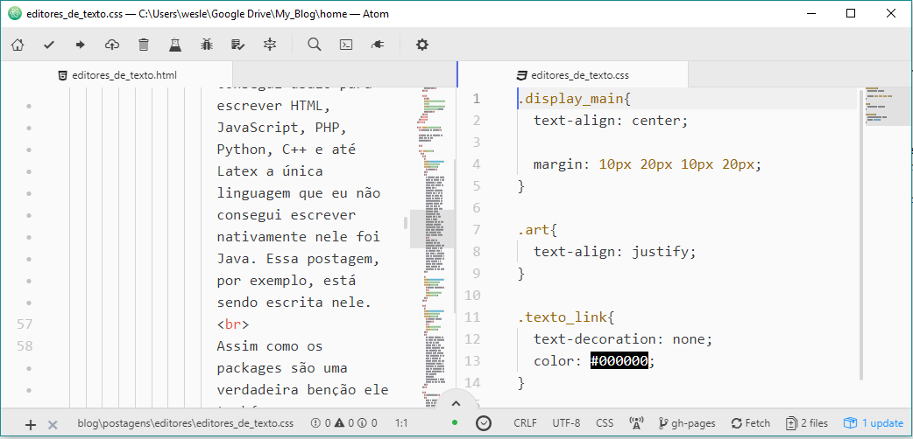
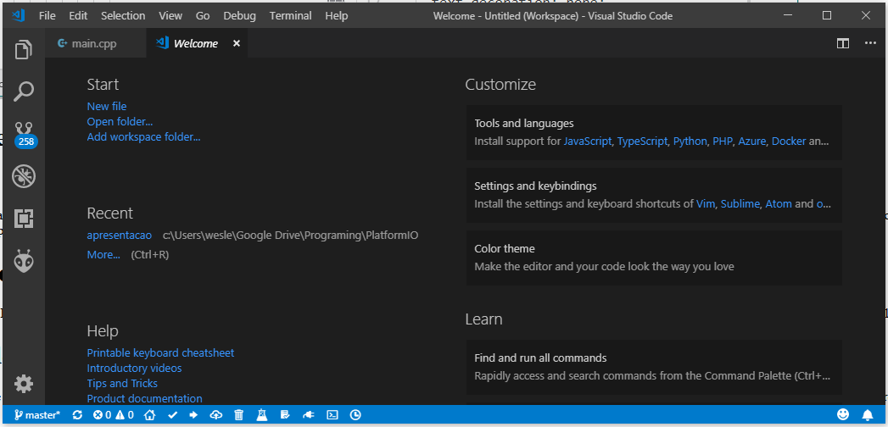
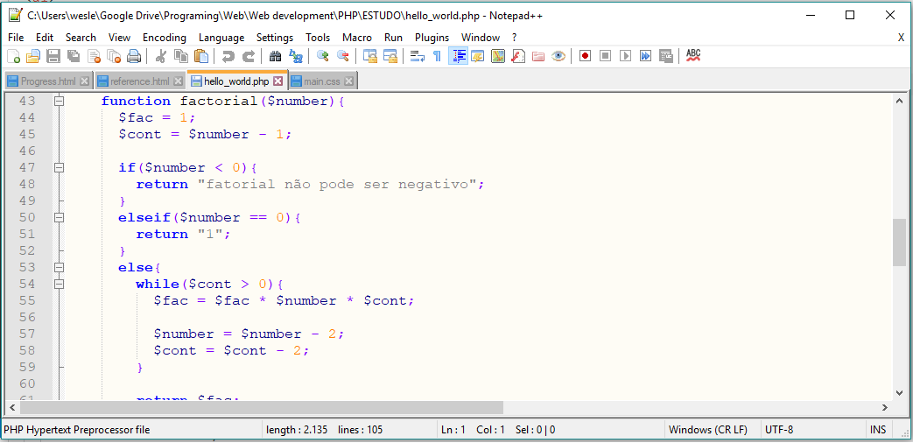
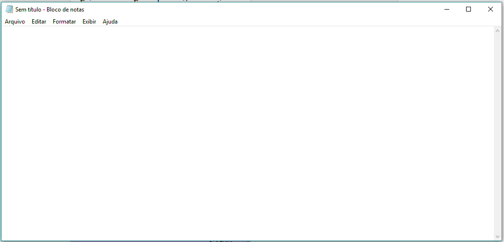

Editores de texto
Estes são os editores de texto que eu uso atualmente
O primeiro item dessa lista (e também o meu preferido) é atom. Feito pela galera do github ele é realmente incrível. Sozinho ele é só um editor de texto mas quando se coloca os packages(pacotes na tradução livre) ele vira uma IDE. Já consegui usalo para escrever HTML, JavaScript, PHP, Python, C++ e até Latex a única linguagem que eu não consegui escrever nativamente nele foi Java. Essa postagem, por exemplo, está sendo escrita nele.
Assim como os packages são uma verdadeira benção ele também passam a ser um problema pois o Atom passa a consumir mais do computador. O principal problema na minha opinião é a demora para iniciar (isto depende da peformace do seu HD).
Página oficial
Ou também chamado de VS code. Não confunda com com VS (sem code). Esse é meu editor preferido para IOT (internet das coisas) pois carrega code facilmente do pc para o arduino ou outras placas que são programadas usando o framework do arduino. Além do platformIO (a melhor alternativa da IDE arduino) funcionar perfeitamente e muito melhor do que no atom.
Página oficial
Esse é comum. Eu gosto de usalo quando quero editar rápidamente um texto ou fazer alguma pequena correção pois ele carrega incrívelmente rápido e suporta muitas mas muitas linguagens.
Página oficial
-
Bloco de notas
É isso mesmo. É aquele que já vem nativo no windows. Não é legal de programar nele mas por que ele está nesta lista? A resposta é que ele, por ser simples, é rápido e um verdadei quebra galho haha.
